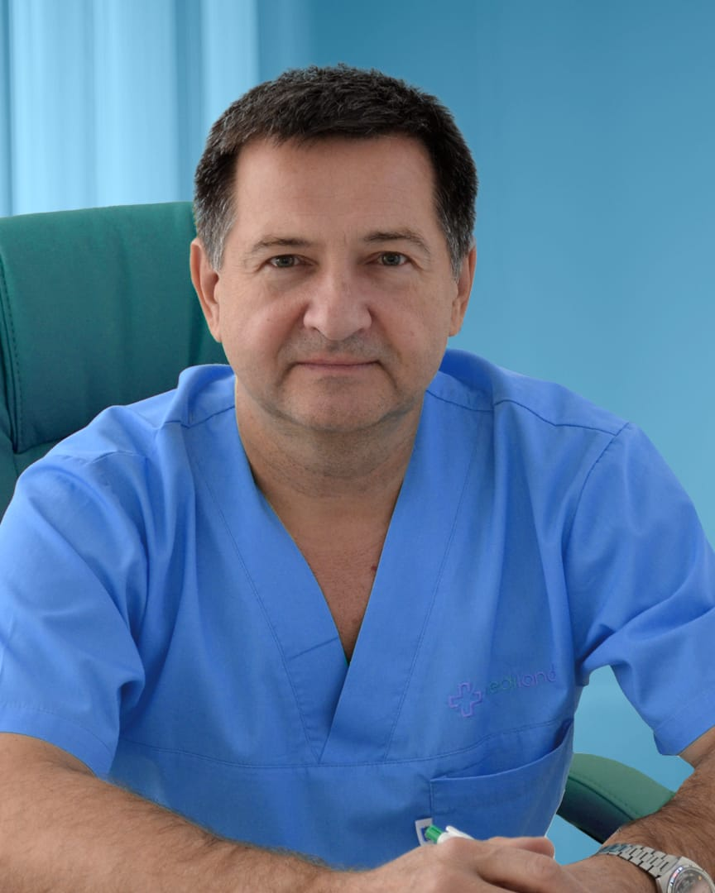

Усов Сергей Николаевич
Пластический хирург
- Кандидат медицинских наук, доцент
- Хирург высшей категории
- Более 26 лет в эстетической хирургии
- Более 4 200 операций
- Вице-президент ВАПРЭХ, член ISAPS
Записаться Подробнее о хирурге (Страница хирурга в разработке)